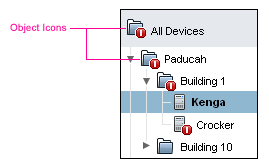
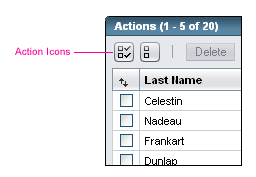

Sun Web Application Guidelines - Version 4.1
Sun Web Application Guidelines - Version 4.1
|
|
|
How To Use These Guidelines - An Introduction
2.4.3 Icons, Glyphs, and Graphics Repository
Sun's corporate identity is distinguished and strengthened by the consistent use of visual design elements in its products. By using the core visual design elements discussed in this chapter, we strengthen the association between Sun's corporate identity and all browser-based Sun applications. Similarly, other companies can represent their own products and corporate identity though these visual elements.
The consistent use of a color palette across product lines helps to reinforce Sun's corporate identity and also serves as a tool for visually organizing data. The color palette used in the Web Application Guidelines brand is part of an overall brand system.
The colors used in the Sun Web Application brand fall on the more neutral side of the Sun brand color palette. Please refer to the example below.

Many of Sun's browser-based applications manage and monitor systems. Due to this, the color palette for the user interface is more subdued to allow data and alarms to be viewed readily. While other companies should use their own color palettes rather than using Sun's, this same philosophy should be considered in choosing appropriate colors for web applications.
 Use the Sun Common UI Component Library (in open source, the Project Woodstock components) to ensure color and design consistency, combined with the style sheets specifying the color palette your company uses.
Use the Sun Common UI Component Library (in open source, the Project Woodstock components) to ensure color and design consistency, combined with the style sheets specifying the color palette your company uses.
Font display is complicated by the vast differences in how various platforms and browsers treat fonts. A central concern that underlies these guidelines is the need to support both accessibility requirements and user preferences.
Aspects of text appearance include: font face, weight, color, size, and background color. The cascading style sheets used by the components in the Sun Common UI Component Library define the font appearance within the components.
The font-families specified in the cascading style sheets used by the Sun Common UI Component Library are: Arial, Helvetica, and sans-serif, in that order of preference. These fonts are sans-serif fonts (fonts without serifs), which display well on screens due to their relatively simple design. Multiple font-families are provided to accommodate various operating systems. However, other companies may choose to change these style sheets to a different font family as part of their brand.
Note that product names in the masthead of Sun's web applications use images instead of plain text. Sun's product names are images because the SunSans family of fonts is not installed on most computers. For more information about "Product Name Images", see: Appendix C, Product Name Images.
The use of font style and color is a subtle, yet integral, element of the overall UI design. The Sun Common UI Component Library uses cascading style sheets to control font style and color. Most of the text specified by these guidelines is normal-weight, black text against a white background. However, bold text and other color combinations are specified in various UI elements.
The Sun Common UI Component Library uses cascading style sheets to control font sizing. The style sheets are platform and browser-specific to provide consistent font-sizing results. To take advantage of this, your application must use browser detection to determine which cascading style sheet to apply.
The style sheets use "em" font size scaling. Using relative font-size units yields control of font size to the end user and allows for more flexibility while improving legibility for the visually impaired.
Users can specify desired font sizes and override page-specified font-sizes via their browser's preference settings. For more information, see Appendix D, Accessibility.
The only logos included in the Sun Common UI Component Library for Sun web applications are the Sun and the Java logos. The name "Sun Microsystems Inc.", in the form of an image, is also used for further brand endorsement.
 The appearance of the corporate logos, and their placement within the UI must not be violated or varied for Sun Applications.
The appearance of the corporate logos, and their placement within the UI must not be violated or varied for Sun Applications.
 These brand elements are reserved for use in web applications developed by Sun Microsystems. Otherwise, this element should be replaced with a brand element appropriate to the company or product that they represent.
These brand elements are reserved for use in web applications developed by Sun Microsystems. Otherwise, this element should be replaced with a brand element appropriate to the company or product that they represent.
For more information on logos, see 1.4 Resources for Application Designers
There are two different types of icons used within the Sun Common UI Component Library and each has its own style associated with it. One type of icon is called an "object icon", another is called an "action" icon. An object icon describes an object, such as a server, and is a static image. An action icon, such as "print", describes an action and has action behavior associated with it.
 To achieve consistent branding use the icons provided within the Sun Common UI Component Library.
To achieve consistent branding use the icons provided within the Sun Common UI Component Library.
 Additional icons needed should be created by either visual designers or qualified contract professionals.
Additional icons needed should be created by either visual designers or qualified contract professionals.
 Do not use icons or other graphics that flash or flicker. Flashing icons can be distracting and can cause individuals with
photosensitive epilepsy
to have seizures, especially when the flashing is within certain frequency ranges.
Do not use icons or other graphics that flash or flicker. Flashing icons can be distracting and can cause individuals with
photosensitive epilepsy
to have seizures, especially when the flashing is within certain frequency ranges.
Object icons visually describe objects. Using object icons helps to visually describe and distinguish objects from one another within any given UI context. Object icons can also help users to make quick visual scans for objects and status. The benefit of using object icons diminishes when using them does not help to distinguish objects from one another, or when it adds visual clutter.
An object icon is clickable only when there is a corresponding action associated with it. For example, clicking an object icon in a tree selects that tree node and often displays information about the selected node in the right-hand side of the page. For more information about trees, see 5.4 Tree Details.
Areas where object icons are presented may include tree, table, lists and topology views. See the tree example below.
Object Icon Example (Tree: "Folder" icon with badge):

Object icons may have alarm or status badges placed over them. For guidelines on how to display badged icons, see Appendix G, Badging Icons.
 Tree icons should follow the guidelines specified in 5.4 Tree Details.
Tree icons should follow the guidelines specified in 5.4 Tree Details.
 When using object icons, use them consistently throughout the application.
When using object icons, use them consistently throughout the application.
 When an object icon and the label of the object are clickable, the links should go to the same place.
When an object icon and the label of the object are clickable, the links should go to the same place.
 When using object icons in tables, the type of object should be included as a separate column and spelled out in the text. This is especially crucial if users must sort by object type.
When using object icons in tables, the type of object should be included as a separate column and spelled out in the text. This is especially crucial if users must sort by object type.
 Other than alarm or status icons, minimize the number of icons inside a table.
Other than alarm or status icons, minimize the number of icons inside a table.
 Icons in flat lists are permissible, but should follow the guidelines for presenting object icons in tables.
Icons in flat lists are permissible, but should follow the guidelines for presenting object icons in tables.
Action icons are distinguishable from object icons in both form and function. Object icons describe objects, while action icons describe actions. Action icons are always clickable, unless disabled, and they are presented in a different visual style than object icons. The style reflects the actionable function of the action icon, as well as its specific presentation context within the user interface.
Action Icon Example (Table Action Bar: "Select All" icon):

In the current UI, action icons are predominantly displayed in tables and dialogs. See the table example above. For more information on using action icons in tables, see 9.5.4 Vertical Pagination in Tables and 9.5.6 View-Changing Buttons in the Tables chapter.
 Action icons should always be clickable, unless disabled.
Action icons should always be clickable, unless disabled.
Icons, glyphs, and graphics used within the components are included in the Sun Common UI Component Library . The images are also available, for download, from the following file: graphics.zip.
Icons used within the user interface should generally have tool tips (HTML Title Text). Every image needs an Alt attribute set on it. However, set the Alt text for images that don't convey meaning (for example, a spacer .gif) to: alt="".
 Use the HTML Title and Alt text associated with the images in the Sun Common UI Component Library .
Use the HTML Title and Alt text associated with the images in the Sun Common UI Component Library .
 When writing HTML Alt Text for application-specific images, provide text that will be clear to the user and helpful to those who rely on assistive technologies. For tool tips showing the status of an object, the tool tip should dynamically change to represent the current state. For examples and more information about object icons changing state, see Chapter 10, Topology, 5.4.2.1 Alarm or Status States of Tree Objects, and Appendix G, Badging Icons.
When writing HTML Alt Text for application-specific images, provide text that will be clear to the user and helpful to those who rely on assistive technologies. For tool tips showing the status of an object, the tool tip should dynamically change to represent the current state. For examples and more information about object icons changing state, see Chapter 10, Topology, 5.4.2.1 Alarm or Status States of Tree Objects, and Appendix G, Badging Icons.
 To achieve consistent branding use the images provided within the Sun Common UI Component Library . For additional brand information, see the brand extranet at: https://brand.sun.com.
To achieve consistent branding use the images provided within the Sun Common UI Component Library . For additional brand information, see the brand extranet at: https://brand.sun.com.
This section provides text capitalization guidelines for various pieces of text displayed in the user interface.
 Apply the following capitalization guidelines for text that appears in UI design elements.
Apply the following capitalization guidelines for text that appears in UI design elements.
Use headline capitalization for:
To apply headline capitalization, capitalize every word except articles ("a," "an," and "the"), coordinating conjunctions (for example, "and," "or," "but," "so," "yet," and "nor"), and prepositions with fewer than four letters (such as "in"). The first and last words are always capitalized, regardless of what they are. If a tool tip (HTML "Title Text") is longer than a few words, sentence capitalization is acceptable. Be consistent within your application.
 Use sentence capitalization for:
Use sentence capitalization for:
Capitalize only the first word of each sentence (unless the text contains proper nouns, abbreviations, or acronyms that are always capitalized). Observe proper punctuation within and at the end of full sentences. Avoid the use of long phrases that are not full sentences. If you must use a phrase that is not a full sentence, no punctuation is required at the end.
| Privacy Policy | Terms of Use | Trademarks | Copyright 2007 Sun Microsystems, Inc. |